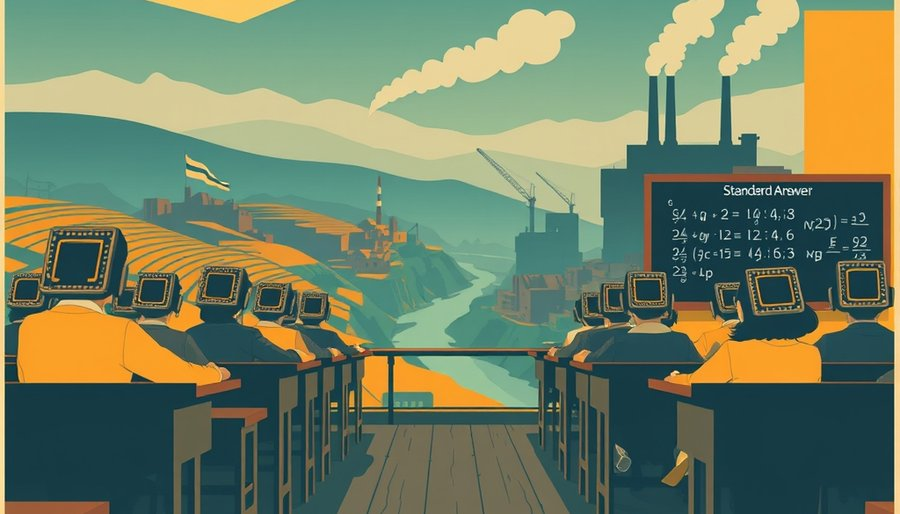

CPU 和 GPU 是两种不同的计算架构。CPU 擅长按顺序高速处理单个复杂任务，GPU 擅长同时处理大量简单任务。Shah 借用这个对比来描述两种认知模式：CPU 思维是线性推理、按步骤解题、在既定框架内寻找唯一答案；GPU 思维是并行连接不同信息、识别模式、提出问题。
走进任何一所普通学校，你看到的就是一台巨大的 CPU 训练机。考试有标准答案，解题有固定步骤，排名依据的是你多快多准地复现预设结果。这种设计不是偶然。它诞生于工业时代，目标是培养能按指令操作、可替换的劳动者。一个世纪以来，这套系统运转良好，因为社会确实需要大量能解决确定性问题的工程师、会计、管理者。
但 Shah 的比喻之所以在今天引起讨论，是因为确定性问题的解决者正在被 AI 替代。AI 的长项正是 CPU 思维的核心：在明确规则下快速找到最优解。从数学证明到法律文书，从医学影像到代码生成，AI 在越来越多的领域达到甚至超过人类专家水平。当答案变得廉价，真正稀缺的是提出好问题的能力。
班加罗尔的学习中心 Tattva Swayam 从 2025 年起尝试一种不同的教育。这里没有标准答案的考试，孩子通过探究项目、概念评估和学习者会议来学习。老师不直接告诉学生答案，他们反复问：你怎么知道？如果换个条件会怎样？这个问题本身有没有问题？这种训练不把积累知识当作首要目标，它追求的是让推理和反思成为习惯。换句话说，它在培养 GPU 思维：建立连接，质疑前提，重构问题。
类似的变化也出现在高等教育中。以色列 Coller 管理学院今年为 MBA 新生举办的工作坊，主题是当 AI 能回答几乎所有问题，人类领导力的价值在哪里，这远离了传统的财务报表和市场策略。讨论的结果指向同一件事：提出 AI 不会问的问题，在模糊情境中做出价值判断，把不同领域的知识拼接成新方案。这些任务需要的是另一种思维模式。
这两个案例并不孤立。全球范围内，从小学到商学院，一种共识正在形成：如果教育继续把大部分时间花在训练学生给出 AI 已经能给出的答案，那么学生离开学校后会发现，自己最擅长的事已经不值钱了。
但 CPU 思维并非毫无用处。一个孩子如果连基本运算都不熟练，连文字都读不通顺，GPU 思维就没有可并行的素材。基础技能的训练仍然需要重复和精准，这正是 CPU 模式的长处。在医疗、航空等高风险领域，按标准流程操作依然是安全底线，CPU 思维的可靠性不可替代。
更重要的边界是：只有当 AI 工具真正普及，能够可靠地外包信息检索和基础分析时，教育重心向 GPU 思维转移才可能发生。在数字基础设施薄弱或基础技能尚未普及的地区，CPU 模式仍然有现实必要性。所以这个判断的重点是优先级转移，与废除旧教育无关。当基础技能和 AI 工具都具备后，继续把大部分时间花在训练 CPU 思维上，就是浪费。
另外，GPU 思维本身也有代价。它需要更长的试错时间，更难以用标准化方式评估，可能让习惯了明确反馈的学生感到不安。而且，如果知识储备不足，并行连接就容易变成肤浅的联想。转向 GPU 思维并非抛弃知识，它改变的是知识的组织方式：从仓库变成网络。
即使学校想培养 GPU 思维，只要升学考试仍然用标准答案筛选学生，家长和老师就不得不回到 CPU 模式。Tattva Swayam 这样的实验之所以可能，部分因为它是一个独立学习中心，不受统一考试的直接约束。对于大多数学校，评价体系才是终极指挥棒。
如果考试开始奖励提出有价值的问题，不再只看回答预设问题的能力，课堂才会真正改变。这个转变已经在一些地方发生：少数学校开始用开放性问题代替标准答案考试，一些大学的入学申请要求提交研究提案而非命题作文。但这些仍然是少数。在大多数国家，标准化考试依然是社会流动的主要通道，而标准化考试天然亲近 CPU 思维。
Shah 的比喻刺痛人，因为它让人看见旧系统的惯性：我们还在用工业时代的标尺衡量信息时代的大脑。当 AI 能回答一切，学校还在奖励知道答案的人，这种错配的代价最终会由学生承担。
尾声
Shah 的比喻当然过于简化，人脑不是芯片。但这个比喻的价值在于，它让一个模糊的焦虑变得可讨论：我们正在用旧标准衡量新世界里的能力。当答案变得廉价，提问、连接和判断才是更持久的通货。教育系统不需要立刻变成 GPU 工厂，但它至少应该停止给 CPU 思维发那么多奖状。
小汪老师的成长观察笔记